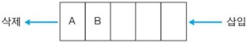

- Queue란?
FIFO(First In First Out:선입선출) 형태의 자료구조로서 스택과 달리 뒤(rear)에서 데이터가 삽입되고 앞(front)에서 데이터가 삭제되는 순서리스트이다.

- 구성 메소드
offer() : 큐의 뒤(rear)에 새 데이터를 삽입
poll() : 큐의 앞(front)에서 데이터를 반환 및 삭제
Peek() : 큐의 앞(front)에 있는 데이터 반환
isEmpty() : 큐가 비어 있는지 검사
- 구현방법